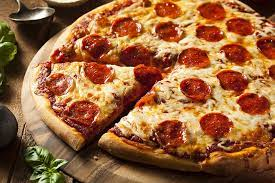

Pepperoni Pizza

Homemade Pepperoni Pizza
This Homemade Pepperoni Pizza has everything you want—a great crust, gooey cheese, and tons of pepperoni.
The secret to great pepperoni flavor? Hide extra under the cheese! Who needs delivery?
Ingredients
- Contadina Quick Pizza Sauce
- Fleischmann's Easy Pizza Crust
- Toppings
Steps
- Preheat the oven to 425 degrees F (220 degrees C). Grease two 12-inch pizza pans.
- Make sauce
- Make crust
- Transfer dough to a floured surface; knead until dough is smooth and elastic, about 4 minutes. Add more flour as needed.
- Divide dough in half. Lightly flour your hands, then pat each piece of dough onto the prepared pizza pans.
- Top dough with sauce, cheese, and pepperoni.
- Bake in the preheated oven until crusts are browned and cheese is bubbly, 18 to 20 minutes.